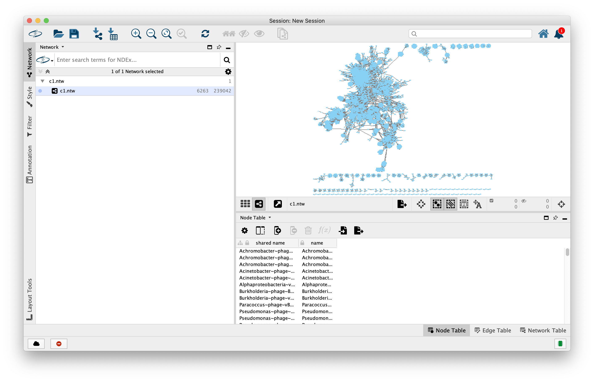
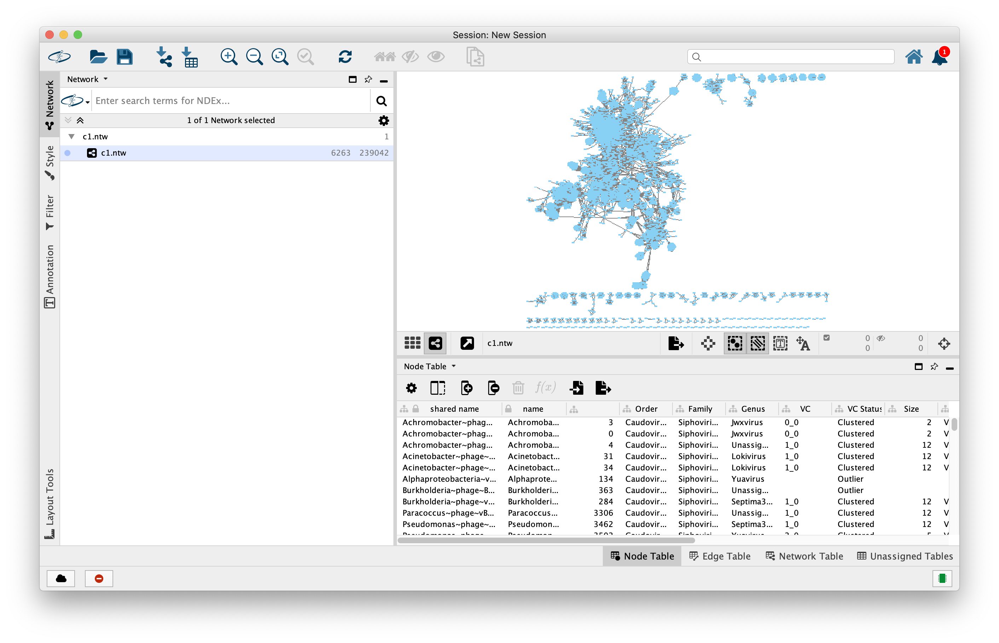

End-to-End Processing of a Viral Metagenome¶
For this dataset, we’ll be fully processing ERR594369, viral metagenome with 37 million paired reads and 7.2Gbp. The SRA Run is ERR594369, which will be important when downloading the data from SRA.
This will include (nearly) all steps and most of the results returned from the command line. Clearly, some outputs can’t be nicely placed here, but are available (as links to files) or in the M8161 project directory.
Everything here uses Singularity. All of the singularity images are located at:
/users/PAS1117/osu9664/eMicro-Apps/
So you must prepend each *.img, *.simg or *.sif Singularity container w/ this path OR link them (see UNIX/LINUX Introduction and Guide). Another way to avoid needing to prepend every Singularity container is to add them to your $PATH
export PATH=/users/PAS1117/osu9664/eMicro-Apps/:$PATH
Now, instead of typing:
singularity run /users/PAS1117/osu9664/eMicro-Apps/SRA_Toolkit.sif fasterq-dump -e 4 -p --split-files ERR594369
You can now type:
SRA_Toolkit.sif fasterq-dump -e 4 -p --split-files ERR594369
Downloading the data¶
The first thing we need to do is grab the data from the SRA. You can do this a few ways, either through navigating the NCBI+SRA websites, or directly using their SRA Toolkit.
# Move to project directory
$ /fs/project/PAS1117/viral_ecogenomics_pipeline/
# Load modules necessary
$ module load singularity
$ time SRA_Toolkit.sif fasterq-dump -e 4 -p --split-files ERR594369
join :|-------------------------------------------------- 100.00%
concat :|-------------------------------------------------- 100.00%
spots read : 37,151,587
reads read : 74,303,174
reads written : 74,303,174
real 21m9.644s
user 6m21.745s
sys 0m45.333s
In the example above, we used fasterq-dump, which is designated to download two paired end read files in fastq format. We also specified 4 threads (-e 4) so it would run a little faster. There should be two output files: ERR594369_1.fastq and ERR594369_2.fastq. fasterq-dump won’t compress the files for you, so you’ll have to do this after the download completes.
Read Quality Control¶
We will be using either BBDuk or Trimmomatic to process our input reads. You only need to select one. We’ll be using both for examples, but typically stick with one and use it.
$ time Trimmomatic-0.36.0.img PE ERR594369_1.fastq.gz ERR594369_2.fastq.gz ERR594369_1_t_paired.fastq.gz ERR594369_1_t_unpaired.fastq.gz ERR594369_2_t_paired.fastq.gz ERR594369_2_t_unpaired.fastq.gz ILLUMINACLIP:/Trimmomatic-0.36/adapters/TruSeq3-PE.fa:2:30:10:2 LEADING:3 TRAILING:3 MINLEN:36
TrimmomaticPE: Started with arguments:
ERR594369_1.fastq.gz ERR594369_2.fastq.gz ERR594369_1_t_paired.fastq.gz ERR594369_1_t_unpaired.fastq.gz ERR594369_2_t_paired.fastq.gz ERR594369_2_t_unpaired.fastq.gz ILLUMINACLIP:/Trimmomatic-0.36/adapters/TruSeq3-PE.fa:2:30:10:2 LEADING:3 TRAILING:3 MINLEN:36
Using PrefixPair: 'TACACTCTTTCCCTACACGACGCTCTTCCGATCT' and 'GTGACTGGAGTTCAGACGTGTGCTCTTCCGATCT'
ILLUMINACLIP: Using 1 prefix pairs, 0 forward/reverse sequences, 0 forward only sequences, 0 reverse only sequences
Quality encoding detected as phred33
Input Read Pairs: 37151587 Both Surviving: 36444033 (98.10%) Forward Only Surviving: 632370 (1.70%) Reverse Only Surviving: 67275 (0.18%) Dropped: 7909 (0.02%)
TrimmomaticPE: Completed successfully
real 30m23.395s
user 29m11.982s
sys 0m55.359s
For Trimmomatic, the defaults work pretty well. Note the location of the IlluminaClip - it’s already “in” the Singularity file. If you have your own custom primers/adapters, you’ll need to add your sequences or create your own primer and adapter file.
Next, BBDuk. BBDuk is usually done in 2-3 steps, with 1st being an adapter trimming step, and 2nd with the removal of low quality sequences. You can do both steps in a single command, but doing so in two steps allows us to see what was removed during each (more below)
$ time BBTools-38.69.sif bbduk.sh in1=ERR594369_1.fastq.gz in2=ERR594369_2.fastq.gz out1=ERR594369_1_t.fastq.gz out2=ERR594369_2_t.fastq.gz ref=/bbmap/resources/adapters.fa ktrim=r k=23 mink=11 hdist=1 tpe tbo
java -ea -Xmx154371m -Xms154371m -cp /bbmap/current/ jgi.BBDuk in1=ERR594369_1.fastq.gz in2=ERR594369_2.fastq.gz out1=ERR594369_1_t.fastq.gz out2=ERR594369_2_t.fastq.gz ref=/bbmap/resources/adapters.fa ktrim=r k=23 mink=11 hdist=1 tpe tbo
Executing jgi.BBDuk [in1=ERR594369_1.fastq.gz, in2=ERR594369_2.fastq.gz, out1=ERR594369_1_t.fastq.gz, out2=ERR594369_2_t.fastq.gz, ref=/bbmap/resources/adapters.fa, ktrim=r, k=23, mink=11, hdist=1, tpe, tbo]
Version 38.69
maskMiddle was disabled because useShortKmers=true
0.019 seconds.
Initial:
Memory: max=156475m, total=156475m, free=153885m, used=2590m
Added 217135 kmers; time: 0.299 seconds.
Memory: max=156475m, total=156475m, free=151295m, used=5180m
Input is being processed as paired
Started output streams: 0.099 seconds.
Processing time: 1052.958 seconds.
Input: 74303174 reads 7164049847 bases.
KTrimmed: 480321 reads (0.65%) 11406582 bases (0.16%)
Trimmed by overlap: 262843 reads (0.35%) 1383411 bases (0.02%)
Total Removed: 3298 reads (0.00%) 12789993 bases (0.18%)
Result: 74299876 reads (100.00%) 7151259854 bases (99.82%)
Time: 1053.358 seconds.
Reads Processed: 74303k 70.54k reads/sec
Bases Processed: 7164m 6.80m bases/sec
real 17m35.086s
user 17m9.820s
sys 0m21.397s
$ time BBTools-38.69.sif bbduk.sh in1=ERR594369_1_t.fastq.gz in2=ERR594369_2_t.fastq.gz qtrim=rl trimq=10 out1=ERR594369_1_t_qc.fastq.gz out2=ERR594369_2_t_qc.fastq.gz
java -ea -Xmx161251m -Xms161251m -cp /bbmap/current/ jgi.BBDuk in1=ERR594369_1_t.fastq.gz in2=ERR594369_2_t.fastq.gz qtrim=rl trimq=10 out1=ERR594369_1_t_qc.fastq.gz out2=ERR594369_2_t_qc.fastq.gz
Executing jgi.BBDuk [in1=ERR594369_1_t.fastq.gz, in2=ERR594369_2_t.fastq.gz, qtrim=rl, trimq=10, out1=ERR594369_1_t_qc.fastq.gz, out2=ERR594369_2_t_qc.fastq.gz]
Version 38.69
0.018 seconds.
Initial:
Memory: max=163448m, total=163448m, free=160743m, used=2705m
Input is being processed as paired
Started output streams: 0.088 seconds.
Processing time: 534.071 seconds.
Input: 74299876 reads 7151259854 bases.
QTrimmed: 238190 reads (0.32%) 2587818 bases (0.04%)
Total Removed: 3352 reads (0.00%) 2587818 bases (0.04%)
Result: 74296524 reads (100.00%) 7148672036 bases (99.96%)
Time: 534.172 seconds.
Reads Processed: 74299k 139.09k reads/sec
Bases Processed: 7151m 13.39m bases/sec
real 8m55.146s
user 8m32.838s
sys 0m20.188s
Now, let’s do the same two commands in one:
$ time BBTools-38.69.sif bbduk.sh in1=ERR594369_1.fastq.gz in2=ERR594369_2.fastq.gz out1=ERR594369_1_t_qc.fastq.gz out2=ERR594369_2_t_qc.fastq.gz ref=/bbmap/resources/adapters.fa qtrim=rl trimq=10 ktrim=r k=23 mink=11 hdist=1 tpe tbo
java -ea -Xmx44523m -Xms44523m -cp /bbmap/current/ jgi.BBDuk in1=ERR594369_1.fastq.gz in2=ERR594369_2.fastq.gz out1=ERR594369_1_t_qc.fastq.gz out2=ERR594369_2_t_qc.fastq.gz ref=/bbmap/resources/adapters.fa qtrim=rl trimq=10 ktrim=r k=23 mink=11 hdist=1 tpe tbo
Executing jgi.BBDuk [in1=ERR594369_1.fastq.gz, in2=ERR594369_2.fastq.gz, out1=ERR594369_1_t_qc.fastq.gz, out2=ERR594369_2_t_qc.fastq.gz, ref=/bbmap/resources/adapters.fa, qtrim=rl, trimq=10, ktrim=r, k=23, mink=11, hdist=1, tpe, tbo]
Version 38.69
maskMiddle was disabled because useShortKmers=true
0.024 seconds.
Initial:
Memory: max=45130m, total=45130m, free=44383m, used=747m
Added 217135 kmers; time: 0.378 seconds.
Memory: max=45130m, total=45130m, free=43387m, used=1743m
Input is being processed as paired
Started output streams: 0.181 seconds.
Processing time: 1190.179 seconds.
Input: 74303174 reads 7164049847 bases.
QTrimmed: 238190 reads (0.32%) 2587818 bases (0.04%)
KTrimmed: 480321 reads (0.65%) 11406582 bases (0.16%)
Trimmed by overlap: 262843 reads (0.35%) 1383411 bases (0.02%)
Total Removed: 6650 reads (0.01%) 15377811 bases (0.21%)
Result: 74296524 reads (99.99%) 7148672036 bases (99.79%)
Time: 1190.739 seconds.
Reads Processed: 74303k 62.40k reads/sec
Bases Processed: 7164m 6.02m bases/sec
real 19m52.888s
user 19m32.398s
sys 0m16.636s
How does the quality check out?
Read Quality Control (Visualizing)¶
Here, we’ve already loaded singularity (above) and moved to the project directory. In this example, I’m going to run FastQC on all of the input files (2), the results from Trimmomatic (4) and the adapter trimmed (2) and quality filtered (2) read pairs of BBDuk.
$ time FastQC-0.11.8.sif ERR594369_1.fastq.gz ERR594369_2.fastq.gz ERR594369_1_t.fastq.gz ERR594369_2_t.fastq.gz ERR594369_1_t_qc.fastq.gz ERR594369_2_t_qc.fastq.gz ERR594369_1_t_paired.fastq.gz ERR594369_1_t_unpaired.fastq.gz ERR594369_2_t_paired.fastq.gz ERR594369_2_t_unpaired.fastq.gz
Started analysis of ERR594369_1.fastq.gz
Approx 5% complete for ERR594369_1.fastq.gz
Approx 10% complete for ERR594369_1.fastq.gz
Approx 15% complete for ERR594369_1.fastq.gz
Approx 20% complete for ERR594369_1.fastq.gz
Approx 25% complete for ERR594369_1.fastq.gz
Approx 30% complete for ERR594369_1.fastq.gz
Approx 35% complete for ERR594369_1.fastq.gz
Approx 40% complete for ERR594369_1.fastq.gz
Approx 45% complete for ERR594369_1.fastq.gz
Approx 50% complete for ERR594369_1.fastq.gz
Approx 55% complete for ERR594369_1.fastq.gz
Approx 60% complete for ERR594369_1.fastq.gz
Approx 65% complete for ERR594369_1.fastq.gz
Approx 70% complete for ERR594369_1.fastq.gz
Approx 75% complete for ERR594369_1.fastq.gz
Approx 80% complete for ERR594369_1.fastq.gz
Approx 85% complete for ERR594369_1.fastq.gz
Approx 90% complete for ERR594369_1.fastq.gz
Approx 95% complete for ERR594369_1.fastq.gz
Analysis complete for ERR594369_1.fastq.gz
Started analysis of ERR594369_2.fastq.gz
...
...
...
Approx 5% complete for ERR594369_2.fastq.gz
Approx 70% complete for ERR594369_2_t_unpaired.fastq.gz
Approx 75% complete for ERR594369_2_t_unpaired.fastq.gz
Approx 80% complete for ERR594369_2_t_unpaired.fastq.gz
Approx 85% complete for ERR594369_2_t_unpaired.fastq.gz
Approx 90% complete for ERR594369_2_t_unpaired.fastq.gz
Approx 95% complete for ERR594369_2_t_unpaired.fastq.gz
Analysis complete for ERR594369_2_t_unpaired.fastq.gz
real 33m29.151s
user 31m33.573s
sys 1m44.834s
I’ve omitted the lengthy 5% increments for all 10 files. Basically, FastQC will process each file individually and deposit the results in <filename>_fastqc.zip and <filename>_fastqc.html.
Next, we’ll want to visually summarize these results using MultiQC. I’m running MultiQC in the directory with all the FastQC results, so I’m using “.” to specify “the current directory” on the command line.
$ time MultiQC-1.7.sif .
[WARNING] multiqc : MultiQC Version v1.11 now available!
[INFO ] multiqc : This is MultiQC v1.7
[INFO ] multiqc : Template : default
[INFO ] multiqc : Searching '.'
[INFO ] fastqc : Found 10 reports
[INFO ] multiqc : Compressing plot data
[INFO ] multiqc : Report : multiqc_report.html
[INFO ] multiqc : Data : multiqc_data
[INFO ] multiqc : MultiQC complete
real 0m7.186s
user 0m1.958s
sys 0m1.499s
Once that’s done, the resulting directory should look like:
$ ls -lh
# Original input data
ERR594369_1_fastqc.zip
ERR594369_2_fastqc.zip
# Trimmomatic results. Paired reads surviving (2) + unpaired reads (mate pair didn't make it) surviving (2)
ERR594369_1_t_paired_fastqc.zip
ERR594369_1_t_unpaired_fastqc.zip
ERR594369_2_t_paired_fastqc.zip
ERR594369_2_t_unpaired_fastqc.zip
# BBDuk adapter trimming results. BBDuk will only return paired reads with the parameters we specified
ERR594369_1_t_fastqc.zip
ERR594369_2_t_fastqc.zip
# BBDuk quality trimming results, using the trimming results (above) as input
ERR594369_1_t_qc_fastqc.zip
ERR594369_2_t_qc_fastqc.zip
# MultiQC report and data
multiqc_report.html
multiqc_data
I’ve added comments to the command (above). Normally, this would NOT be in the output, but I’m commenting here to break down what files came from where.
Assembly¶
Assembly isn’t for the faint of heart. It can be frustrating and it can fail for a lot of reasons, often due to insufficient memory or due to the dataset complexity. There’s only so much you can do.
However, our example dataset will finish on OSC within a few hours. Below is the bash script that can be submitted to OSC that should assemble your data.
This will run SPAdes on the Trimmomatic-cleaned reads, alternatives are below.
#!/bin/bash
#SBATCH -N 1
#SBATCH -t 24:00:00
#SBATCH -n 48
#SBATCH -J SPAdes
#SBATCH --partition=hugemem
# Load the SPAdes module - or can be loaded directly
module load singularity
spadesLoc=/users/PAS1117/osu9664/eMicro-Apps/SPAdes-3.13.0.sif
# General Options, can't use --careful with --meta
genOpts="--meta -k 21,33,55,77,99,121" # Paired end, 1 pair only
runOpts="-t 48 -m 124" # Match to job request. This is 48 cores and 124 GB memory (a node on Owens = 128 GB)
spadesRun="${spadesLoc} ${genOpts} ${runOpts}" # Because we loaded the module, the system knows where to look
workDir="/fs/project/PAS1117/ben/VEP"
pe1f="${workDir}/processed_reads/ERR594369_1_t_paired.fastq.gz"
pe1r="${workDir}/processed_reads/ERR594369_2_t_paired.fastq.gz"
spadesRun="${spadesRun} --pe1-1 ${pe1f} --pe1-2 ${pe1r}"
# I always like to know what command was actually sent to SPAdes
# -o will send the output of SPAdes to the assembly directory, defined above
echo "${spadesRun} -o ${workDir}/MetaSPAdes_Trimmomatic"
${spadesRun} -o "${workDir}/MetaSPAdes_Trimmomatic"
Submit using:
$ sbatch SPAdes.sh
Please see the OSC guide for how this job script was created. Since I’m familiar with the sample background (sample complexity, microbes, relative sequencing depth) and the SPAdes assembler for this sample, I can guess at how long to request for the job. I requested 24 hours and a full large memory node (48 cores, and set SPAdes -t 48). It used to be that at the end of the run, OSC would let you know the resources you used, but sadly, they do not (or I haven’t figured out how to automatically get it). Instead, we can use “sacct” to figure out what resources were used.
For this job:
$ sacct -j 5181167 --format "CPUTime,MaxRSS,Elapsed"
CPUTime MaxRSS Elapsed
---------- ---------- ----------
9-10:48:00 64883592K 04:43:30
Oops! The job required ~65 GB and took 4 hr 43 minutes. Considerably less than I had anticipated. We can’t do anything about the GB requested, as asking for 48 cores will give you at least a large memory node. We could request 70 GB of memory, but OSC will still charge you for the whole node.
The SPAdes directory:
$ ls MetaSPAdes_Trimmomatic
assembly_graph.fastg contigs.fasta dataset.info K21 K77 params.txt spades.log
assembly_graph_with_scaffolds.gfa contigs.paths first_pe_contigs.fasta K33 K99 scaffolds.fasta tmp
before_rr.fasta corrected input_dataset.yaml K55 misc scaffolds.paths
If we check the number of contigs generated, we get 322,596.
$ grep -c ">" final.contigs.fa
322596
And now, what if we wanted to use a different assembler, let’s say MEGAHIT?
#!/bin/bash
#SBATCH -N 1
#SBATCH -t 4:00:00
#SBATCH -n 48
#SBATCH -J MEGAHIT
#SBATCH --partition=hugemem
module load singularity
# Directories
projectDir="/fs/project/PAS1117/ben/VEP"
megahitLoc="/users/PAS1117/osu9664/eMicro-Apps/MEGAHIT-1.2.8.sif"
outputDir="${projectDir}/assemblies/MEGAHIT_with_Trimmomatic"
# Assembling with MEGAHIT, so setting up parameters
genOpts="--k-list 21,41,61,81,99" # K-mer selection is a PhD itself...
runOpts="-t 48 -m 0.9" # Match to job request, 40 cores and 90% of memory
# Whare are the reads we'll need?
forReads="${projectDir}/processed_reads/ERR594369_1_t_paired.fastq.gz"
revReads="${projectDir}/processed_reads/ERR594369_2_t_paired.fastq.gz"
# Now that we have our parameters and input files, we can put everything together
megahitCmd="${megahitLoc} ${genOpts} ${runOpts}"
megahitCmd="${megahitCmd} -1 ${forReads} -2 ${revReads}"
echo "${megahitCmd} -o ${outputDir}"
time ${megahitCmd} -o ${outputDir}
Submit!
And resources used:
$ sacct -j 5181104 --format "CPUTime,MaxRSS,Elapsed"
CPUTime MaxRSS Elapsed
---------- ---------- ----------
1-12:56:00 5717660K 00:46:10
That took 46 minutes and used ~5.7 GB. That’s… quite a bit faster and significantly less memory.
Let’s also take a look at the output files:
$ ls MEGAHIT_with_Trimmomatic
checkpoints.txt done final.contigs.fa intermediate_contigs log options.json
If we check the number of contigs generated, we get 297,969.
$ grep -c ">" final.contigs.fa
297969
Post-Assembly Cleanup?¶
After assembly, we’re left with a few decisions. Which read QC and which assembly method do we want to use? Even though we only use MEGAHIT or SPAdes + Trimmomatic, we could have easily used BBduk. Depending on your sample background and the types of viruses you expect to see, SPAdes or MEGAHIT could be “better” or “worse” contigs. In reality, the differences are minor, so you can move forward with either of them.
At this point you could de-replicate/-duplicate your contigs. If you have a lot of contigs
Identifying Viruses¶
The next step is to identify which contigs are viral, and which are not.
- There are many, many tools (now in 2021) to identify viruses in metagenomic data. We’ll follow the
VirSorter2 SOP . PLEASE CITE THIS IF YOU FOLLOW ALONG to identify viruses.
This new SOP includes both CheckV and DRAM. Previous versions of this guide used CheckV only as a means of assessing quality, this newer version uses CheckV alongside VirSorter2 to assist in virome clean up.
NOTE: As this guide continues to expand, we’ll add in more analyses to flesh out this content.
First, we’ll run an initial pass using VirSorter2
#!/bin/bash
#SBATCH -N 1
#SBATCH -t 4:00:00
#SBATCH -n 40
#SBATCH -J VS2_p1
# Load the SPAdes module - or can be loaded directly
module load singularity
vs2Loc=/users/PAS1117/osu9664/eMicro-Apps/VirSorter2-2.2.3.sif
workDir="/fs/project/PAS1117/ben/VEP"
cd $workDir
# Variables to pass to VirSorter2
opts="--keep-original-seq --include-groups dsDNAphage,ssDNA --min-length 5000 --min-score 0.5 -j 40"
outDir="${workDir}/analyses/VirSorter2-Pass1"
input="${workDir}/assemblies/MetaSPAdes_Trimmomatic/contigs.fasta"
time $vs2Loc run -i $input -w $outDir $opts all
$ sbatch VirSorter2-Pass1.sh
$ sacct -j 5276291 --format "CPUTime,MaxRSS,Elapsed"
CPUTime MaxRSS Elapsed
---------- ---------- ----------
4-16:18:00 1229896K 02:48:27
If you noticed, we used VirSorter2’s filter argument to limit the SPAdes contigs to 5k. Alternatively, you could also use DeepVirFinder and combine the two results.
Next, run CheckV…
#!/bin/bash
#SBATCH -N 1
#SBATCH -t 1:00:00
#SBATCH -n 40
#SBATCH -J CheckV
# Load the SPAdes module - or can be loaded directly
module load singularity
checkVLoc=/users/PAS1117/osu9664/eMicro-Apps/CheckV-0.8.1.sif
workDir="/fs/project/PAS1117/ben/VEP"
cd $workDir
# Variables to pass to VirSorter2
opts="-t 40"
input="${workDir}/analyses/VirSorter2-Pass1/final-viral-combined.fa"
outDir="${workDir}/analyses/CheckV"
time $checkVLoc end_to_end $input $outDir $opts
$ sbatch CheckV.sh
$ sacct -j 5286506 --format "CPUTime,MaxRSS,Elapsed"
CPUTime MaxRSS Elapsed
---------- ---------- ----------
04:30:00 1403380K 00:06:45
Let’s check into the results of CheckV before we continue with the SOP. Open up “quality_summary.tsv” from the CheckV results directory:
$ ls /fs/project/PAS1117/ben/VEP/CheckV
completeness.tsv proviruses.fna tmp complete_genomes.tsv
contamination.tsv quality_summary.tsv viruses.fna
You can download this file to your computer and open in Google Sheets, Microsoft Excel, Numbers, or any other spreadsheet. Alternatively, you could look through the file using “less” or similar unix-tool. What we want to do is get an overview of CheckV’s quality assessment of the 1st-pass VirSorter2 genomes.
Another way of examining them is with a quick “grep -c” (for count).
$ grep -c "Low-quality" quality_summary.tsv
2825
$ grep -c "Medium-quality" quality_summary.tsv
25
$ grep -c "High-quality" quality_summary.tsv
1
$ grep -c "Not-determined" quality_summary.tsv
528
CheckV is conservative with regards to quality, and uses completeness as a measure. It also incorporates a contamination check, so you can quickly screen contigs.
Now re-run VirSorter.
#!/bin/bash
#SBATCH -N 1
#SBATCH -t 4:00:00
#SBATCH -n 40
#SBATCH -J VS2_p2
# Load VirSorter
module load singularity
vs2Loc=/users/PAS1117/osu9664/eMicro-Apps/VirSorter2-2.2.3.sif
workDir="/fs/project/PAS1117/ben/VEP"
# Merge CheckV's proviruses and viruses
input=$workDir/analyses/CheckV/combined.fna
cat $workDir/analyses/CheckV/proviruses.fna $workDir/analyses/CheckV/viruses.fna > $input
cd $workDir
# Variables to pass to VirSorter2
opts="--seqname-suffix-off --viral-gene-enrich-off --provirus-off --prep-for-dramv -j 40 --include-groups dsDNAphage,ssDNA --min-length 5000 --min-score 0.5"
outDir="${workDir}/analyses/VirSorter2-Pass2"
time $vs2Loc run -i $input -w $outDir $opts all
# Wait for the command to complete before ending the job
wait
$ sbatch VirSorter2-Pass2.sh
$ sacct -j 5286779 --format "CPUTime,MaxRSS,Elapsed"
CPUTime MaxRSS Elapsed
---------- ---------- ----------
5-02:28:40 1249568K 03:03:43
Now we want to annotate our putative viral genomes and then manually screen them to ensure they are of high confidence. VirSorter2 can contain false positives. No viral tool is completely perfect - every one of them has advantages or disadvantages, depending on the viral types present in the sample and biases to the identification tool.
To do this, we’ll use DRAM-v to identify AMGs (more below) and to identify “suspicious” genes that can be found in viral genomes and can lead to them being called viral.
#!/bin/bash
#SBATCH -N 1
#SBATCH -t 120:00:00
#SBATCH -n 40
#SBATCH -J DRAMv
# Load the SPAdes module - or can be loaded directly
module load singularity
dramLoc=/users/PAS1117/osu9664/eMicro-Apps/DRAM-PAS1573-1.2.1.sif
workDir="/fs/project/PAS1117/ben/VEP"
cd $workDir
# Annotate
fasta_input="${workDir}/analyses/VirSorter2-Pass2/for-dramv/final-viral-combined-for-dramv.fa"
affi_input="${workDir}/analyses/VirSorter2-Pass2/for-dramv/viral-affi-contigs-for-dramv.tab"
# Variables to pass to DRAMv annotate
opts="--skip_trnascan --threads 40 --min_contig_size 1000"
outDir="${workDir}/analyses/DRAMv-annotate"
time dramLoc annotate -i $fasta_input -v $affi_input -o $outDir $opts
# Then summarize
time dramLoc distill -i $outDir/annotations.tsv -o "${workDir}/analyses/DRAMv-distill"
Two things to notice. 1) We’re still continuing with the VirSorter2 SOP and 2) we’re using a special Singularity version of DRAMv. Feel free to use the module version or your own installation.
Let’s see how long this took.
$ sacct -j 5371984 --format "CPUTime,MaxRSS,Elapsed"
CPUTime MaxRSS Elapsed
---------- ---------- ----------
135-17:22:00 9029732K 3-09:26:03
Three days and 9 hours using 40 cores to annotate 3313 contigs.
Next, we need to screen based on the viral and host genes, hallmark genes, and contig lengths between CheckV and VirSorter2, and incorporate DRAM results in order to have confidence in our viral calls. The VirSorter2 SOP has a general set of guidelines we can use. Basically, they’re screening categories: Keep1, Keep2, Manual check, and discard.
We’ve written a short python script that can handle some of the basic filtering, but cannot substitute for manually verifying the results. Please look through the “Manual curation” (Step 5) of the VirSorter2 SOP documentation. If you want results you can be confident in, ensure you go through them.
#!/bin/bash
#SBATCH -N 1
#SBATCH -t 00:05:00
#SBATCH -n 1
#SBATCH -J VS2-SOP
workDir="/fs/project/PAS1117/ben/VEP"
vs2_genomes="${workDir}/analyses/CheckV/combined.fna"
vs2_final_score="${workDir}/analyses/VirSorter2-Pass1/final-viral-score.tsv"
amg_summary="${workDir}/analyses/DRAMv-distill/amg_summary.tsv"
checkv_contamination="${workDir}/analyses/CheckV/contamination.tsv"
output_dir="${workDir}/analyses/VS2-SOP"
# NOTE: --dramv-amg is optional
python /users/PAS1117/osu9664/eMicro-Apps/Process-VS2_and_DRAMv.py --vs2-scores $vs2_final_score --checkv-contam $checkv_contamination --dramv-amg $amg_summary --vs2-genomes $vs2_genomes --output-dir $output_dir --drop-manual
$ sacct -j 5427090 --format "CPUTime,MaxRSS,Elapsed"
CPUTime MaxRSS Elapsed
---------- ---------- ----------
00:00:20 0 00:00:20
The log file for the script is as follows:
Wrote 3243 records to /fs/project/PAS1117/ben/VEP/analyses/VS2-SOP/final-viral-scored.fa
Saved summary table to /fs/project/PAS1117/ben/VEP/analyses/VS2-SOP/final-viral-scored.tsv
Two files are generated. A summary table with information incorporating CheckV and VirSorter2, and the final viral genomes. We’ll use these results for vConTACT2 and taxonomic classification.
Preparing for vConTACT2 and Running vConTACT2¶
vConTACT2 is a tool to classify viral genomes. But first, we need to get the input files setup. In the script below, we’ll run prodigal first - to generate proteins - and then use an accessory function to prepare vConTACT2 files.
#!/bin/bash
#SBATCH -N 1
#SBATCH -t 4:00:00
#SBATCH -n 48
#SBATCH -J vConTACT2
#SBATCH --partition=hugemem
module load singularity
module use /fs/project/PAS1117/modulefiles
module load singularityImages
# Directories
workDir="/fs/project/PAS1117/ben/VEP"
# Generate files suitable for vConTACT2
prodigalLoc="/users/PAS1117/osu9664/eMicro-Apps/Prodigal-2.6.3.img"
input_fna="${workDir}/analyses/VS2-SOP/final-viral-scored.fa"
prodigal_outputDir="${workDir}/analyses/Prodigal_output"
mkdir $prodigal_outputDir
time $prodigalLoc -i $input_fna -p meta -a $prodigal_outputDir/VirSorter2_genomes.faa \
-o $prodigal_outputDir/VirSorter2_genomes.prodigal
# Run vConTACT2
vcontact2Loc="/users/PAS1117/osu9664/eMicro-Apps/vConTACT2-0.9.20.sif"
outputDir="${workDir}/analyses/vConTACT2_output"
time singularity exec $vcontact2Loc vcontact2_gene2genome -p $prodigal_outputDir/VirSorter2_genomes.faa \
-o $prodigal_outputDir/VirSorter2_proteins.csv -s Prodigal-FAA
time $vcontact2Loc --pcs-mode MCL --vcs-mode ClusterONE --threads 48 --raw-proteins $prodigal_outputDir/VirSorter2_genomes.faa \
--rel-mode Diamond --proteins-fp $prodigal_outputDir/VirSorter2_proteins.csv --db 'ProkaryoticViralRefSeq201-Merged' \
--output-dir $outputDir
wait
$ sacct -j 5430686 --format "CPUTime,MaxRSS,Elapsed"
CPUTime MaxRSS Elapsed
---------- ---------- ----------
3-05:38:24 9884748K 01:37:03
The job only took 1 hr 37 min, provided 48 cores and 1.5 TB of memory. Based on the results, we would not re-run this job with these parameters! Next time, a “standard” 28, 40 or 48-core node on Owens or Pitzer would suffice.
There are a lot of files generated from vConTACT2, here’s a list of files that should be generated:
$ ls /fs/project/PAS1117/ben/VEP/analyses/vConTACT2_output
c1.clusters modules_mcl_5.0_modules.pandas
c1.ntw modules_mcl_5.0_pcs.pandas
genome_by_genome_overview.csv modules.ntwk
merged_df.csv sig1.0_mcl2.0_clusters.csv
merged.dmnd sig1.0_mcl2.0_contigs.csv
merged.faa sig1.0_mcl2.0_modsig1.0_modmcl5.0_minshared3_link_mod_cluster.csv
merged.self-diamond.tab sig1.0_mcl5.0_minshared3_modules.csv
merged.self-diamond.tab.abc vConTACT_contigs.csv
merged.self-diamond.tab.mci vConTACT_pcs.csv
merged.self-diamond.tab_mcl20.clusters vConTACT_profiles.csv
merged.self-diamond.tab_mcxload.tab vConTACT_proteins.csv
modules_mcl_5.0.clusters viral_cluster_overview.csv
The two most important files are “genome_by_genome_overview.csv”, which provides an overview of all the genomes that were processed by vConTACT2, and “c1.ntw”, which contains the network.
Next, you can examine the network OR the viral clusters.
On a computer with Cytoscape installed, import the network using File -> Import -> Network from File. Upon import, select Advanced options, Delimiter is space, deselect “Use first line as column names.” -> OK.
Now, click on Column 1, set it as Source Node, click on Column 2, set it as Target Node -> OK.
You should see this:
{kind=link}

Next, we want to add annotations to our network. Go to File -> Import -> Table from File. Upon import, on “Where to Import Table Data”, select “To A Network Collection”, then import Data as “Node Table Columns”. Finally, in the Preview, click on the “Genome” column and and then click on the “key” symbol, then OK.
{kind=link}

Now you have all the annotations added to the network. You can style and adjust the network to whatever is appropriate for your research goals.
And with that, we’ve gone from raw, environmental viral metagenome data (downloaded from the SRA). We’ve QC’d, assembled, identified viral genomes, checked their quality, and then got a bit of classification. Just like with the Microbial Ecology pipeline, we’re only a few steps away from a published manuscript!